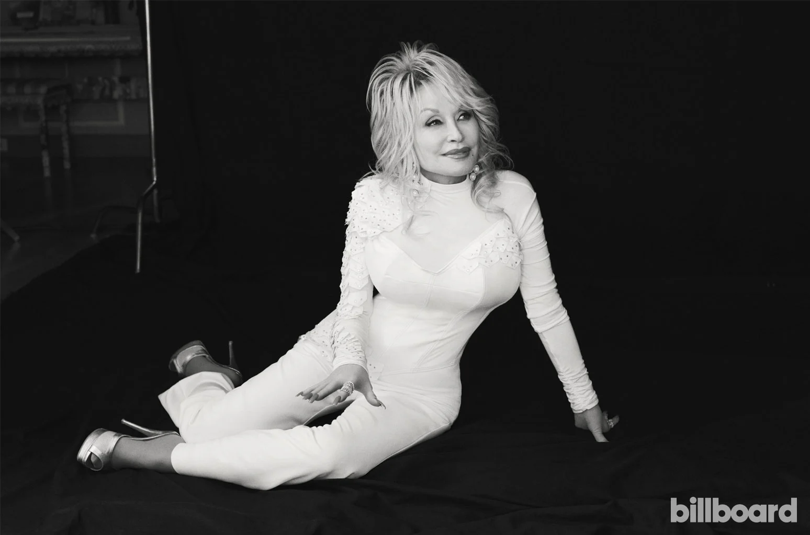

Dolly Parton's music career has been a journey filled with success and innovation. Rising to fame in the late 1960s, her unique blend of country, pop, and bluegrass garnered widespread appeal. With numerous chart-topping hits like "Jolene" and "9 to 5," Parton's powerful vocals and poignant songwriting have made her an enduring icon in the music industry. Her contributions to country music and her ability to connect with audiences have solidified her status as one of the most influential and beloved artists of all time.
Dolly Parton's acting career has been notable for her roles in films such as "9 to 5," "Steel Magnolias," and "Straight Talk." Her performance in "9 to 5" garnered critical acclaim and a Golden Globe nomination. Parton's charismatic presence and versatile talent have made her a respected figure in both the music and acting industries.
Dolly Parton established the Imagination Library, which has provided millions of free books to children worldwide, promoting literacy and education. Additionally, Parton has been actively involved in various charitable initiatives, including disaster relief efforts and healthcare initiatives. Her selfless dedication to improving the lives of others has earned her numerous honors and recognition, making her a shining example of the positive impact one person can have on the world.
Timeline
1946
Dolly Rebecca Parton was born January 19, 1946, in Pittman Center, Tennessee.
1952
Her earliest public performances were in the church, beginning at age six.
1966
Dolly Partion married Carl Thomas Dean.
1976
She began working closely with Sandy Gallin, who served as her personal manager for the next 25 years.
1978
Dolly Parton won a Grammy Award for Best Female Country Vocal Performance for her Here You Come Again album.
1981
Her singles continued to appear consistently in the country Top 10. Between 1981 and 1985, she had twelve Top 10 hits.
1988
Dollywood Foundation was created in April 1988, and began by offering scholarships to local high school students.
1995
The book "Dolly: My life and other unfinshed business" was published.
2000
Dolly Parton was Inducted into the Country Hall of fame.
2007
Her foundation gave way 5 million books.
2015
The TV movie Dolly Parton's Coat of Many Colors airs on NBC.
2020
Dolly Parton makes a $1 million donation to the Vanderbilt University Medical Center to help fund research for a coronavirus vaccine.
Discography
Jolene
1974

Coat of Many Colors
1971

Here You Come Again
1977

The Grass Is Blue
1991

Little Sparrow
2001

Heart Breaker
1978

9 To 5 And Odd Jobs
1980

Just Because I’m a Woman
1968

New Harvest… First Gathering
1977